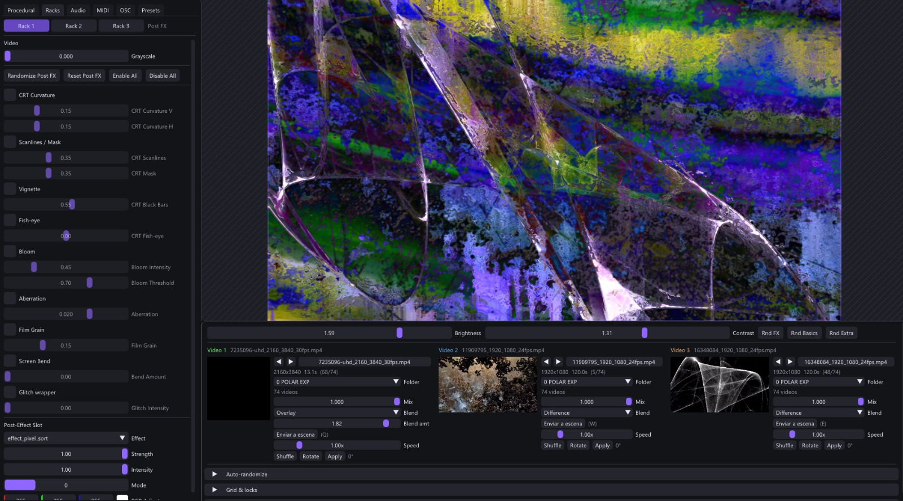

Monophase is a live visual engine for dark rooms and long sets. Three video sources, a chain of GLSL effects and a compute pipeline running on the GPU, all driven by the music you play.
Download for WindowsView sourceMonophase has no footage of its own. On first launch, use the Folder control to point it at the folder where your video library lives. It scans the folder and its subfolders, and every source picks its clips from there. Until you do this, the sources stay black.

I made Monophase because I wanted visuals that behave like the music: repetitive, patient, slowly mutating, then suddenly hard. Most VJ tools ask you to trigger clips. This one asks you to play the image, the same way you would play a filter on a mixer.
It is one program instead of a stack of them. Sources, effects, audio analysis and output live in the same Vulkan frame, so nothing is bounced through a capture card or a second window.
Each of the three sources is independent: its own clip, speed, rotation and blend. Mix them, stack them, or let one carry the whole set.
Video files decoded with FFmpeg and uploaded through a staging ring, plus procedural GLSL generators that need no footage at all.
More than 40 post effects written in GLSL: feedback, pixel sort, kaleidoscope, bloom, CRT, glitch, reaction-diffusion and more. Stack them in slots.
FFT analysis of the live input drives parameters. MIDI and OSC let you play it from a controller or another machine.
The renderer is plain Vulkan, no engine on top. The frame is built by a seven-stage compute pipeline (base, spatial, detail, temporal, degradation, color, output), and the final result is presented through a fullscreen graphics pass. Compute work is dispatched in descriptor-driven passes over storage images, so adding a stage is adding a shader.
Effects are GLSL compiled to SPIR-V ahead of time and loaded as modules. A shared uniform block carries time, audio bands and every control value, which means an effect can read the whole state of the instrument without extra plumbing. The same applies to the procedural generators: they are single GLSL files that you can open, edit and recompile.
Decoding runs on its own thread. Frames go through a CPU frame pool and a staging ring into GPU textures, so playback of three streams does not stall the render loop. Stereo anaglyph output is a built-in mode for red/cyan glasses.
| Language | C++20 |
| Graphics API | Vulkan, compute + graphics, SPIR-V shaders |
| Shaders | GLSL, 40+ post effects, dozens of procedural generators |
| Video | FFmpeg (libavcodec, libavformat, libswscale) |
| Audio | PortAudio input, FFTW real-time spectrum |
| Control | MIDI (RtMidi), OSC (liblo), Dear ImGui interface |
| Window and input | SDL2 |
Windows 10 or 11, 64-bit. Unzip and run TechnoVisuals.exe from inside its folder, then select the root folder of your videos before anything else. If it does not open, update your GPU driver first.